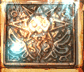

| 概要 | 情報 | アイテム一覧 |
| 敵キャラ一覧 | ステージ一覧 | 夢幻迷宮について |
| 攻略チャート | Zwei!! 攻略へ |
| ステージ選択へ |
アプリエス Lv.16
| A  |
A-A'間はワープゾーンで行き来します。 |
B |
B地点では、このオブジェクトに明かりをともすことで扉が開きます。 ピピロの無属性魔法でつきます。 |
| C | C地点を通過すると、敵に囲まれます。 ぶつからないように注意しましょう。 |
| D |
D地点には、このオブジェクトが3つあります。 大砲に狙撃されないように注意して、3つともに明かりをともすと扉が開きます。 |
E |
E地点を通過すると、敵に囲まれます。 また、E地点に太陽の女神像を置くと、再び敵が現れます。 |
| F |
F地点のワープゾーン(3つ目の下)から、F'地点へ移動できます。 |
| G |
G地点にはこのオブジェクトがあります。 ちょうどG地点の扉の上をかすめるあたりから魔法を打つと、点火できます。 |
| H |
H地点とH'地点に女神像を置くと、それぞれ近くの扉が開きます。 |
I |
I地点のワープゾーンを使うと、I'地点へ移動できます。 うまく移動すると、孤立した部屋へ移動できますが、行く方法はこの図のとおりです。詳細は情報を参考にしてください。。 |
| ステージ選択へ |
| 概要 | 情報 | アイテム一覧 |
| 敵キャラ一覧 | ステージ一覧 | 夢幻迷宮について |
| 攻略チャート | Zwei!! 攻略へ |
Zwei!!
| 目次へ戻る | ページの上部へ |